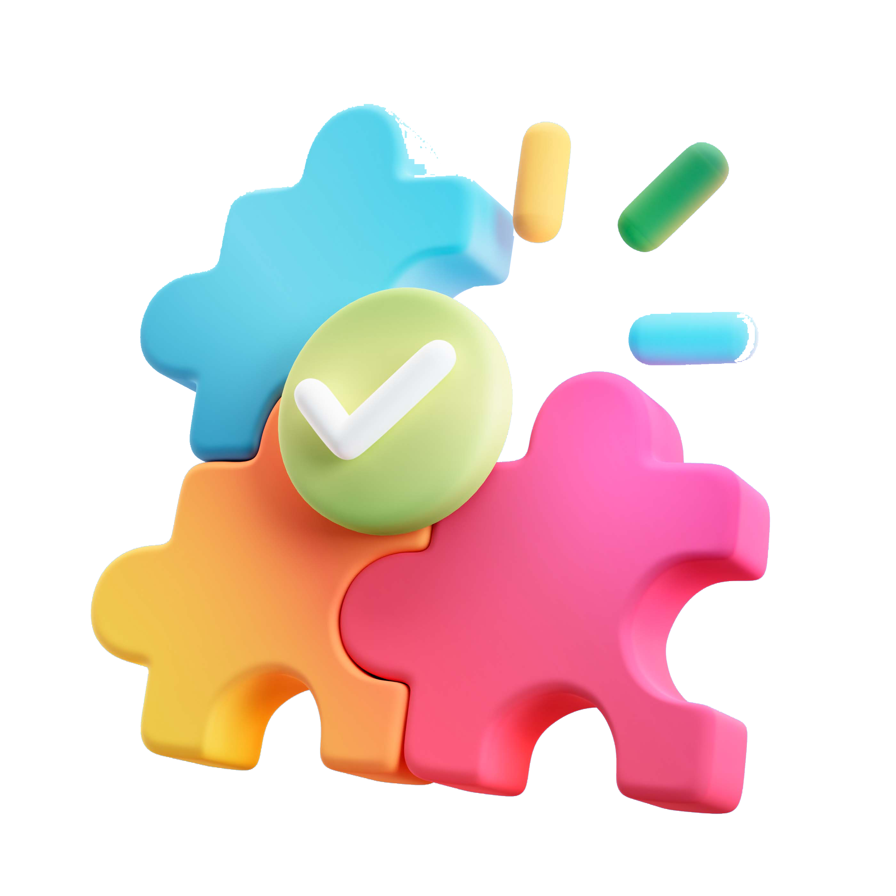

¿Qué podemos imprimir para vos?

En Impacto 3D Rauch, entendemos que la innovación requiere velocidad y precisión. Por eso, ofrecemos servicios de prototipado rápido, permitiéndote convertir ideas y diseños en modelos físicos en cuestión de horas o días, sin necesidad de moldes costosos o largos procesos de producción.
¿Para qué sirve el prototipado rápido?
El prototipado rápido es una solución ideal para diversas industrias y necesidades, tales como:
- Creación de piezas de prueba antes de la producción en masa.
- Modelos físicos de proyectos para presentaciones y validaciones.
- Desarrollo de productos antes de invertir en fabricación.
Ventajas del prototipado rápido
- ✅ Ahorro de tiempo: Creación de modelos en horas, acelerando el proceso de desarrollo.
- ✅ Menor costo: No requiere producción en masa para validar un diseño.
- ✅ Flexibilidad total: Fácil modificación y ajustes sin grandes inversiones.
Proceso de trabajo

- Nos enviás tu diseño en 3D (STL, OBJ) o te ayudamos a crearlo.
- Seleccionamos el material y la tecnología de impresión adecuada.
- Imprimimos el prototipo con alta precisión y calidad.
- Recibís tu modelo listo para pruebas y validaciones.